Geometric Duality: Conformal Scaling of Black Hole Interiors
Abstract
The Universe is a Black Hole.
We propose that black-hole infall and cosmological expansion are reciprocal descriptions of one geometry. Let \(r(\tau)\) be the horizon-normalized areal radius along a future-directed, freely falling worldline, and introduce the inverse-radius ansatz \[ a(\tau)=\frac{1}{r(\tau)}. \] If \(F(r)=-dr/d\tau\) is the positive inward flow, then \(H=\dot a/a=F(r)/r\). A shrinking radial coordinate therefore corresponds to a growing spatial scale without reversing the direction of proper time.
Applying this reciprocal factor isotropically to neighboring freely falling worldlines maps the spatially flat matter–radiation–Λ Friedmann expansion into the infall function \[ F(r) = r\sqrt{ \frac{8\pi G}{3} \left( \rho_{m0}r^3+\rho_{r0}r^4+\rho_\Lambda \right) }. \] Matter and radiation dilute as the reciprocal scale grows, while vacuum energy remains constant. Near \(r=0\), \(F(r)\sim H_\Lambda r\): the required proper time diverges and the limiting curvature remains finite.
Restoring physical units with the observed \(H_0\) and \(\Omega_\Lambda\) gives the de Sitter radius \(R_\Lambda=c/(H_0\sqrt{\Omega_\Lambda})\) and \[ \Lambda=\frac{3}{R_\Lambda^2} \simeq1.09\times10^{-52}\;\mathrm{m^{-2}}, \] matching the observed cosmological scale.
The same construction also expresses \(\Omega_\Lambda\), the critical Hubble mass, the particle horizon, and the Planck-scale vacuum hierarchy as reciprocal relations among the observed cosmic horizons.
You Are Here
In Euclidean geometry, Pythagoras tells us that the distance \(ds\) between two points in a Cartesian coordinate grid \((x,y)\) is given by [1]:
\[ ds^{2} = dx^{2} + dy^{2} \]
This immediately generalizes to three (and higher) dimensions:
\[ ds^{2} = dx^{2} + dy^{2} + dz^{2} + \dots \]
This positive-definite quadratic form of the Euclidean metric is invariant under rotations and translations, providing a universal measure of distance and forming the geometric backbone of Newtonian physics.
In 1905, Einstein unified space and time in his theory of Special Relativity, replacing the simple metric with the spacetime interval [2]:
\[ ds^{2} = -\,dt^{2} + dx^{2} + dy^{2} + dz^{2} \]
or, for purely radial separations,
\[ ds^{2} = -\,dt^{2} + dr^{2}. \]
Minkowski (1908) interpreted this geometrically to show that events lie on a four-dimensional manifold with Lorentzian signature \((-,+,+,+)\), and that \(ds^{2}\) plays exactly the role of a metric distance [3]. Crucially, the negative sign on the temporal component distinguishes timelike \((ds^{2} < 0)\) from spacelike \((ds^{2}> 0)\) separations, enforcing the invariant light-cone structure that governs causality and underpinning the hallmark relativistic effects of time dilation and length contraction.
Einstein’s theory of General Relativity (1915) promotes the metric \(g_{\mu\nu}(x)\) to a dynamical field. Free-falling particles follow geodesics determined by the Christoffel symbols (first derivatives of \(g\)), while the manifold’s curvature—encoded in the Riemann and Ricci tensors (second derivatives of \(g\))—comes from energy and momentum. This relationship is described in Einstein's field equations (with \( c = G = 1 \)) [4]:
\[ G_{\mu\nu} = R_{\mu\nu} - \tfrac12\,\mathcal R\,g_{\mu\nu} = 8\pi\,T_{\mu\nu} \]
In 1916 Schwarzschild found the first spherically symmetric vacuum solution of these field equations, describing a Black Hole [5]:
\[ ds^{2} = -\Bigl(1 - \frac{2M}{r}\Bigr)\,dt^{2} + \Bigl(1 - \frac{2M}{r}\Bigr)^{-1}\,dr^{2} + r^{2}\,d\Omega^{2}. \]
Adopting conventional units where \(2M=1\) locates the Black Hole's Event Horizon at \(r=1\). If we only consider radial motion, the \(d\Omega\) term goes to 0, leaving just
\[ ds^{2} = -\Bigl(1 - \frac{1}{r}\Bigr)\,dt^{2} + \Bigl(1 - \frac{1}{r}\Bigr)^{-1}\,dr^{2} \]
Above the Event Horizon (\( r > 1 \)), the factor \((1 - 1/r)\) is positive, so \(t\) remains a timelike coordinate and \(r\) remains spacelike, in accordance with our usual notion of time and space, but below the Event Horizon (\( r < 1 \)), the factor \((1 - 1/r)\) becomes negative, flipping the signs in front of \(dt^{2}\) and \(dr^{2}\) and thus exchanging the roles of \(t\) and \(r\): the radial direction becomes timelike and the timelike direction becomes spacelike.
But what does it mean for space and time to exchange roles at the horizon?
ΛCDM Model: Predictions & Limitations
But first: what does it mean for the coordinate roles to be fixed? In standard cosmology we enforce a global comoving time parameter \(t\) that remains timelike everywhere, so space and time never swap roles. Let \(R\) be the comoving radial coordinate in FLRW space. This gives the spatially flat FLRW line element [7, 8, 35]:
\begin{equation}\label{eq:flrw-metric} ds^{2} = -\,dt^{2} + a(t)^{2}\bigl(dR^{2} + R^{2}\,d\Omega^{2}\bigr). \end{equation}
The Hubble expansion rate is \(H\equiv\dot a/a\). Its dynamics follow from the Friedmann equations [6, 22, 23, 37]:
\begin{equation}\label{eq:friedmann-background} H^{2} = \frac{8\pi G}{3}\bigl(\rho_{m} + \rho_{r} + \rho_{\Lambda}\bigr), \quad \frac{\ddot a}{a} = -\frac{4\pi G}{3}\bigl(\rho_{m} + 2\rho_{r} - 2\rho_{\Lambda}\bigr), \end{equation}
Here \(\rho_m\), \(\rho_r\), and \(\rho_\Lambda\) are the matter, radiation, and vacuum-energy densities, with \(\rho_m\propto a^{-3}\), \(\rho_r\propto a^{-4}\), and \(\rho_\Lambda=\Lambda/(8\pi G)\) [23, 28, 37].
ΛCDM excels at matching:
- Type Ia supernovae indicating late‐time acceleration [9, 38],
- Baryon Acoustic Oscillation scales [10, 40],
- Cosmic Microwave Background anisotropies [11],
- Hubble expansion rate (\(H_{0}\approx67\text{–}73\,\mathrm{km\,s^{-1}\,Mpc^{-1}}\)) [11, 12].
Yet ΛCDM faces deep conceptual and observational challenges:
- Cosmological constant problem: Quantum‐field estimates of \(\rho_{\Lambda}\) exceed observations by 50+ orders of magnitude [36, 37].
- Fine-tuning: Why is \(\rho_{\Lambda}\) nonzero yet so extraordinarily small [36, 37]?
- Coincidence problem: Why do we happen to live at the epoch where \(\Omega_{m}\approx\Omega_{\Lambda}\) [37]?
- No direct detection: Dark energy interacts only via gravity, with no nongravitational signature. [36, 37].
- Hubble Tension: A persistent discrepancy between local distance‐ladder and CMB‐inferred values of \(H_{0}\) [11, 12].
- Geodesic incompleteness: The Hawking–Penrose theorems establish incomplete causal geodesics under specified energy and causal conditions [13].
By fixing the comoving slicing, ΛCDM sidesteps the coordinate‐role swap seen at a black‐hole horizon. Is it possible that ΛCDM is overlooking something of great significance?
A Leap of Faith
To conceptualize the coordinate switch, let us consider physics’ two most famous astronauts, Alice and Bob, in just the scenario Schwarzschild describes. Their space station is in deep space, where the spacetime curvature is negligible, observing a supermassive black hole (SMBH) from a super‐safe distance. Let \(r\) denote the Schwarzschild areal radius Bob assigns to Alice. For now, let us say they are hovering far above the horizon, at \(r\gg 1\) (in conventional units where \(r=2M=1\)) with thrusters, so that Bob's clock tracks the idealized FLRW comoving time parameter with negligible error. On the station they experience inertial motion, and by the Equivalence Principle [14] they measure space to be flat in all directions. Alice departs in the G‐Odyssic, a spacecraft built to survive the journey to the black hole interior, and maneuvers until the SMBH’s gravity pulls her in.
Initially, Alice and Bob are very close (both at \(r\gg 1\)), and their relative velocity is small. Alice sees Bob and the station receding in her rearview cameras, eventually shrinking into a single point of light in the sky behind her, while she lets gravity pull the G‐Odyssic straight down. Meanwhile, Bob sees Alice begin to drift inward and fall toward the SMBH, accelerating as she does. He plots their positions on a large piece of graph paper, with the SMBH drawn as a unit circle (horizon at \(r=1\), singularity at \(r=0\)), which looks like this:
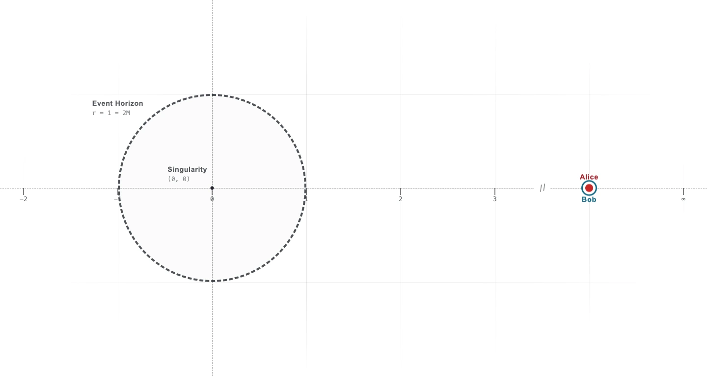
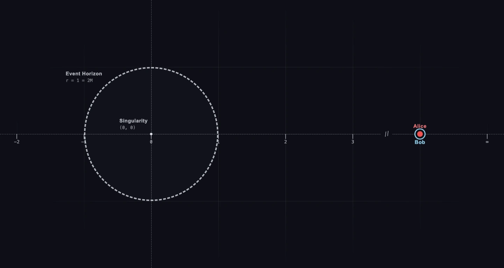
Bob knows two things from General Relativity [18]:
- In his own coordinate time \(t\), he will never see Alice cross the horizon at \(r=1\), nor receive any signal from her once she does. As \(t\to\infty\), her light and radio pulses become infinitely redshifted and fade away.
- In Alice’s proper time \(\tau\), she will reach \( r=1 \) after a finite interval and then continue inward in free fall.
Because Alice's motion remains inertial during the entire journey, she registers no forces. In her local frame, her clock ticks normally, and she measures space as flat. But what she experiences and what Bob sees are starkly different.
As Alice free‐falls toward the horizon, her radial coordinate \(r(\tau)\) decreases, and her speed relative to Bob increases. The black hole grows larger and larger in her viewport. She jettisons a cloud of miniature probes that follow her in free fall on parallel worldlines to collect data. In the unit‐circle diagram, Alice slowly approaches the event horizon located at \(r=1\)—see Figure 2.
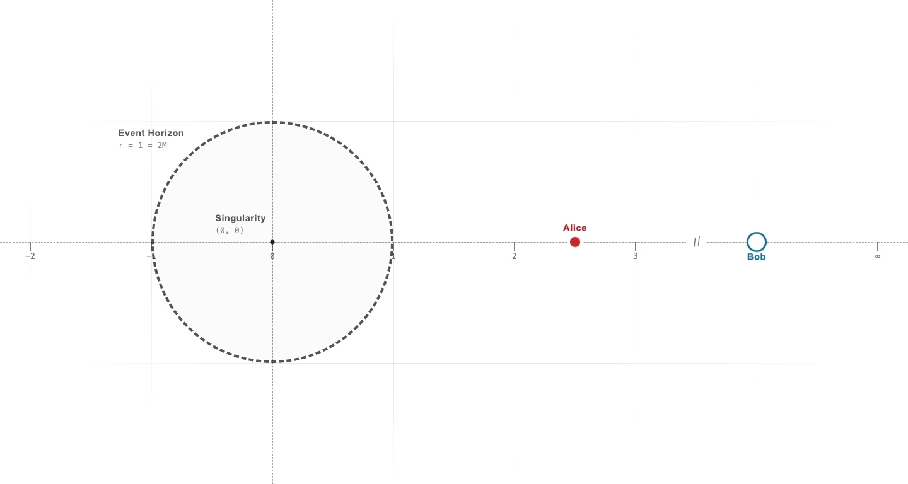
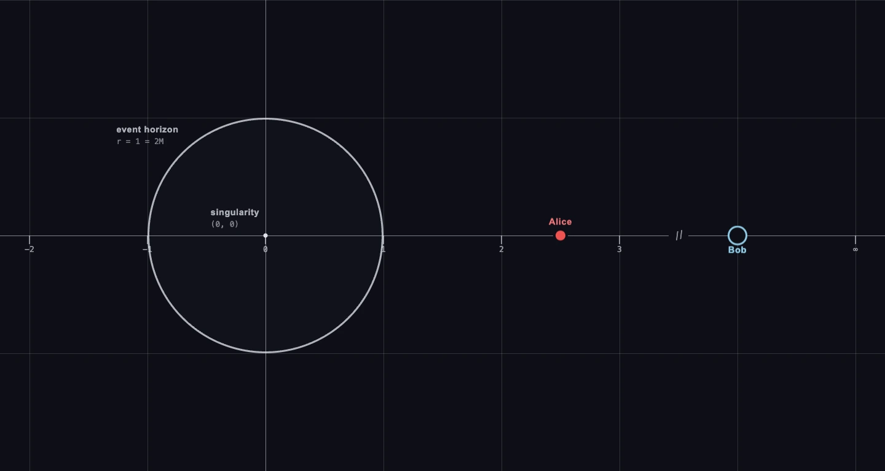
At the precise moment Alice’s coordinate reaches \(r=1\), Bob’s reception interval between successive radio pulses stretches to infinity—he sees her signal smear across the event horizon. To him, Alice asymptotically approaches \(r=1\) as \(t\to+\infty\). Yet in Alice’s local frame, crossing \(r=1\) is unremarkable: she registers no sudden forces, space appears locally flat, and her proper‐time \(\tau\) continues smoothly, as required by the Equivalence Principle. In the unit‐circle diagram, she simply passes through the perimeter—see Figure 3.
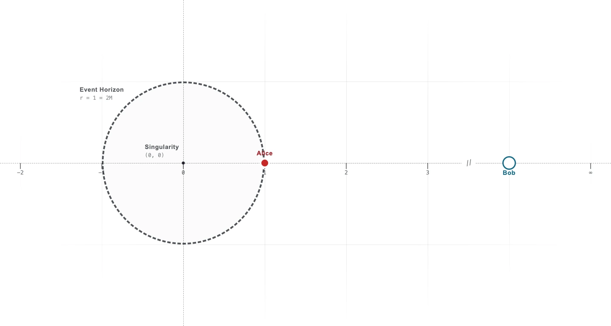
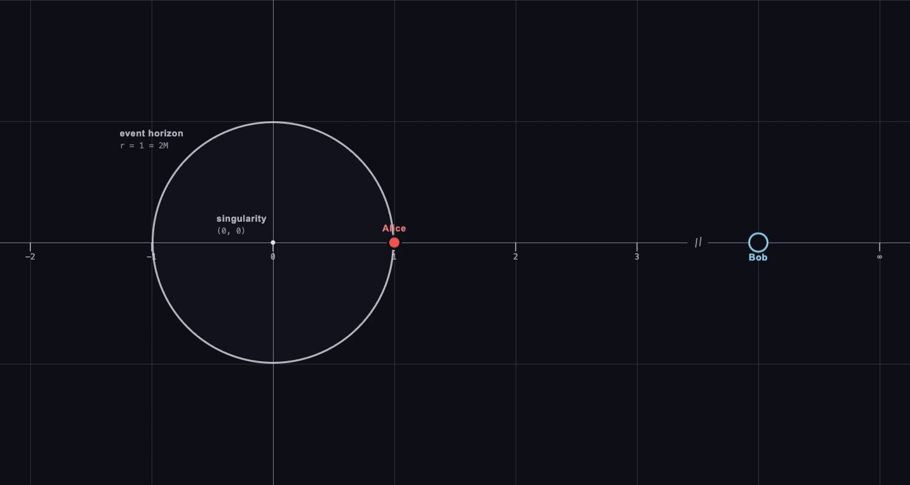
As Alice moves past \(r=1\), Bob loses track of her entirely — her radio pulses have redshifted to zero. Yet aboard the freely-falling G-Odyssic, nothing changes: her local spacetime remains flat (Minkowskian), just as the Equivalence Principle demands.
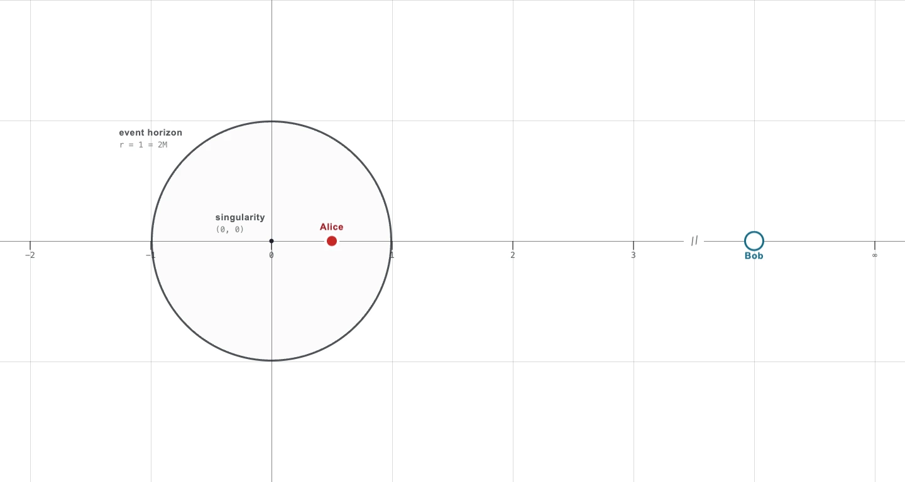
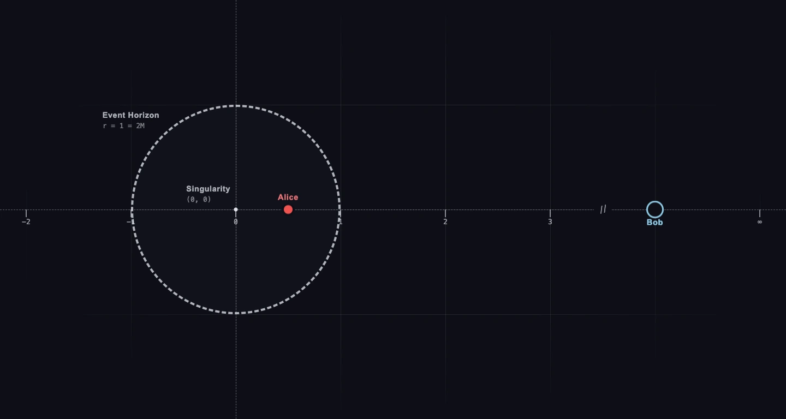
Below the horizon, Alice is in uncharted territory. According to GR, in pure‐vacuum Schwarzschild, Alice’s proper‐time to reach the central singularity at \(r=0\) is finite:
\[ \tau_{\text{vac}} = \int_{1}^{0} \frac{-\,dr}{\sqrt{1/r}} = \tfrac{2}{3} \]
Note: \(-dr\) records Alice’s inward motion on Bob’s radial diagram; elapsed proper time remains positive.
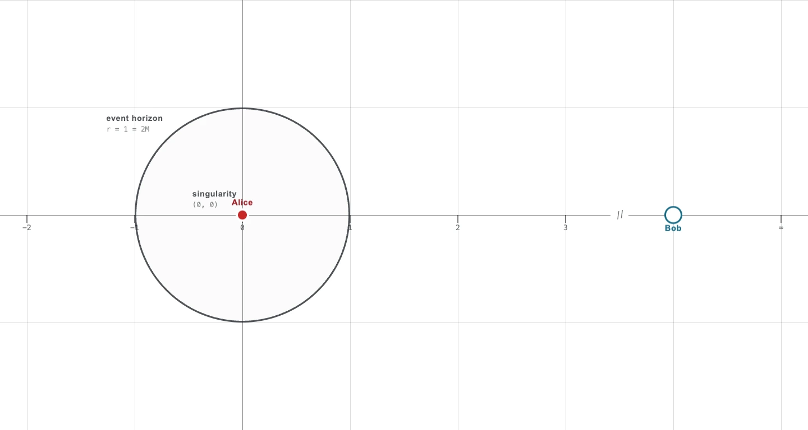
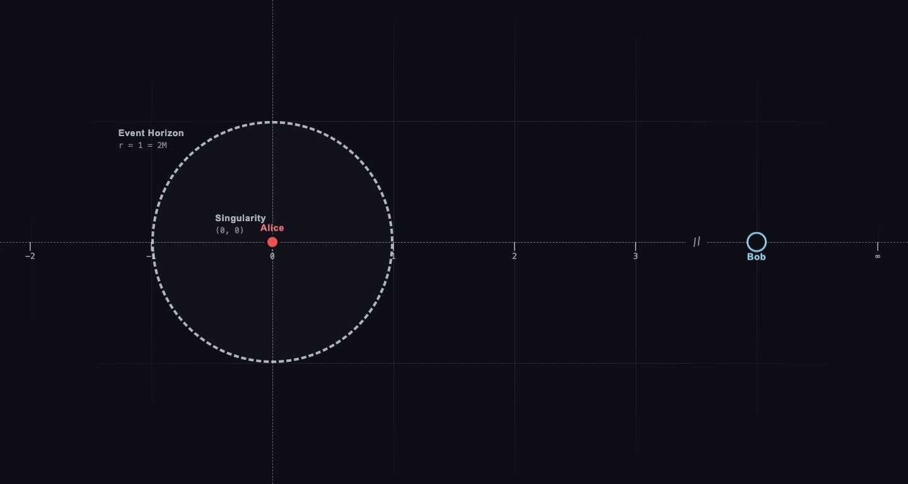
But this pure-vacuum picture doesn’t account for the coordinate switch, and leads to an inevitable singularity at \(r=0\). Is it possible to conceive the Black Hole interior in such a way that Alice doesn’t crash into the singularity? And if she doesn’t hit it at \( r=0 \), where is it? Fortunately, we already have the mental tools to intuitively grasp the interior geometry of the Black Hole. All we need is a little perspective—see Figure 6.
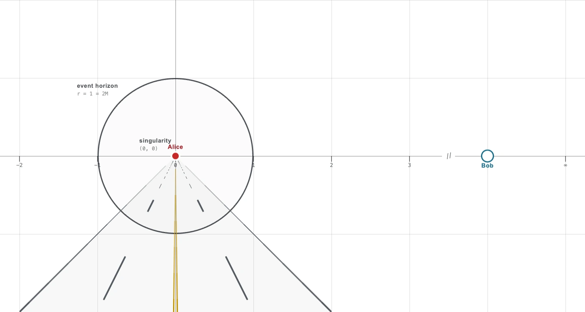
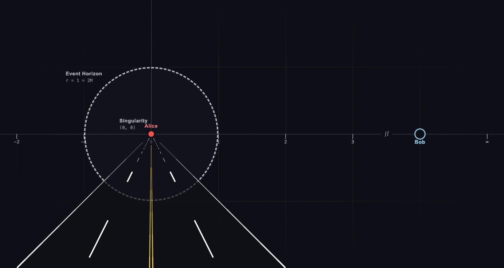
A pure-vacuum interior, as Schwarzschild envisioned, forces a real crash at \(r=0\) in finite \( \tau \). This is where we depart from the standard story: to preserve Alice’s inertial experience all the way down, we introduce the scaling factor \(a = 1/r\), replacing the interior vacuum with a dust + Λ Painlevé-Gullstrand metric [15, 16], characterized by the infall function \(F(r)\). In that geometry, the proper‐time \( \tau_{\rm int} \) to \(r=0\) becomes
\begin{equation}\label{eq:interior-flow} \tau_{\rm int} = \int_{1}^{0} \frac{-\,dr}{F(r)}, \quad F(r) = r \sqrt{\frac{8\pi G}{3}\rho}. \end{equation}
Because \(F(r)\sim r\sqrt{\rho_{\Lambda}}\) near \(r=0\), \(\tau_{\rm int}\to\infty\), Alice never reaches a singularity in finite proper time—her journey remains inertial, and her local space stays flat at every moment, as required by the Equivalence Principle. The coordinate switch means the black hole singularity is not a point in space, but a point in time located at future infinity.
Furthermore, the specific geometry of this novel perspective has some very surprising qualities.
Infall Becomes Expansion
Let \(r(\tau)\) be Alice's position on Bob's radial diagram, and define her positive inward flow by \[ F(r) \equiv -\frac{dr}{d\tau}. \] The late-time infall function in Equation \eqref{eq:interior-flow} follows from the inverse-radius geometry and the matter, radiation, and Λ energy constraint. Let \begin{equation}\label{eq:reciprocal-ansatz} a(\tau)=\frac{1}{r(\tau)}, \end{equation} so \begin{equation}\label{eq:alice-hubble} H_{\rm A} = \frac{\dot a}{a} = -\frac{\dot r}{r} = \frac{F(r)}{r}, \qquad F(r)=rH_{\rm A}. \end{equation} With matter, radiation, and Λ, this gives \begin{equation}\label{eq:infall-function} \boxed{ F(r) = r\sqrt{ \frac{8\pi G}{3} \left( \rho_{m0}r^3 +\rho_{r0}r^4 +\rho_\Lambda \right) } }. \end{equation} Appendix A derives Equation \eqref{eq:infall-function}.
The inverse-radius ansatz
Return to the cloud of probes falling alongside Alice. At the event horizon, \(r=a=1\). Let \(\ell_H\) be Alice's initial separation from a neighboring probe. As Alice falls, the scale factor stretches this separation equally in every spatial direction: \begin{equation}\label{eq:probe-separation} \boxed{ d\ell_\alpha^2 = a(\tau)^2d\ell_H^2, \qquad \ell_\alpha(\tau) = a(\tau)\ell_H = \frac{\ell_H}{r(\tau)} }. \end{equation} Thus, as Alice moves toward \(r=0\) on Bob's diagram, the distance she measures between the parallel worldlines grows without bound.
Differentiating the probe separation gives \(\dot\ell_\alpha/\ell_\alpha=H_{\rm A}\), the expansion rate defined in Equation \eqref{eq:alice-hubble}. The same inward flow that carries Alice toward \(r=0\) drives the outward expansion of her probe cloud.
The probe cloud
Because the reciprocal factor acts equally in every spatial direction, a spherical cloud of probes remains spherical while its volume grows as \[ V_\alpha(\tau)=a(\tau)^3V_H. \] Its expansion, shear, and rotation are therefore \begin{equation}\label{eq:probe-congruence} \boxed{ \Theta = \frac{\dot V_\alpha}{V_\alpha} =3H_{\rm A}, \qquad \sigma_{\mu\nu}=0, \qquad \omega_{\mu\nu}=0 }. \end{equation} These are the standard kinematic invariants of a timelike congruence [34, 35]. Here we depart from the standard Schwarzschild interior. Schwarzschild tides stretch a freely falling cloud in the radial direction while compressing it in the two transverse directions [18, 30]; our inverse-radius cloud expands isotropically.
From probes to density
The probes are test particles, but the same collection of non-interacting, freely falling particles becomes pressureless dust once its mass density is included [19, 20, 21]. Conservation of matter requires \[ \rho_m(\tau)V_\alpha(\tau) = \rho_{m0}V_H, \] where \(\rho_{m0}\) is the density at \(a=1\). The expanding probe volume therefore gives \begin{equation}\label{eq:matter-dilution} \boxed{ \rho_m(\tau)=\rho_{m0}a(\tau)^{-3} }. \end{equation} The inverse-radius volume and conservation of the dust cloud produce the familiar matter dilution law [28, 35, 37].
Radiation shares the same volume dilution, while the stretching of each photon's wavelength contributes one additional factor of \(a^{-1}\). Its density therefore evolves as \begin{equation}\label{eq:radiation-dilution} \boxed{ \rho_r(\tau)=\rho_{r0}a(\tau)^{-4} }, \end{equation} where \(\rho_{r0}\) is the radiation density at \(a=1\) [28, 37].
The resulting expansion
Substituting these densities into the energy constraint gives \[ \frac{F(r)}{r} = \sqrt{ \frac{8\pi G}{3} \left(\rho_m+\rho_r+\rho_\Lambda\right) }. \] Since \(H_{\rm A}=F(r)/r\), Alice's expansion obeys \begin{equation}\label{eq:alice-friedmann} \boxed{ H_{\rm A}^2 = \frac{8\pi G}{3} \left( \rho_{m0}a^{-3} +\rho_{r0}a^{-4} +\rho_\Lambda \right) }. \end{equation} This is the spatially flat matter–radiation–Λ Friedmann equation [6, 37]. Differentiating and using \(\dot\rho_m=-3H_{\rm A}\rho_m\) and \(\dot\rho_r=-4H_{\rm A}\rho_r\) gives \begin{equation}\label{eq:alice-acceleration} \boxed{ \frac{\ddot a}{a} = -\frac{4\pi G}{3} \left(\rho_m+2\rho_r-2\rho_\Lambda\right) }. \end{equation} The cloud expands at every stage. Radiation and matter initially decelerate its expansion; vacuum energy accelerates it once \(2\rho_\Lambda>\rho_m+2\rho_r\).
The geometry that emerges
Center a spatial coordinate system on Alice and use \((R,\theta,\phi)\) to label the probes at the horizon. These labels are distinct from Bob's black-hole-centered coordinate \(r\). Applying the derived scale factor throughout Alice's interior gives \begin{equation}\label{eq:alice-metric} \boxed{ ds^2 = -d\tau^2 +a(\tau)^2 \left(dR^2+R^2d\Omega^2\right) }. \end{equation} Equation \eqref{eq:alice-metric} is the spatially flat FLRW metric in Equation \eqref{eq:flrw-metric}, written in Alice's proper time. The equation for \(H_{\rm A}\) above is its matter, radiation, and Λ Friedmann equation [7, 8, 33, 35].
The Inverse-Radius Interior
Equation \eqref{eq:alice-metric} gives Alice's spatially flat interior geometry in terms of her proper time. Her position on Bob's radial diagram decreases monotonically from the horizon at \(r=1\) toward \(r=0\), so \(r\) can also label her interior evolution. Equation \eqref{eq:alice-hubble} gives \[ \frac{dr}{d\tau} = -F(r) = -rH_{\rm A}(r), \qquad d\tau = -\frac{dr}{rH_{\rm A}(r)}. \]
Substituting this relation and Equation \eqref{eq:reciprocal-ansatz} into Equation \eqref{eq:alice-metric} gives \begin{equation}\label{eq:inverse-radius-metric} \boxed{ ds^2 = \frac{1}{r^2} \left[ -\frac{dr^2}{H_{\rm A}(r)^2} +dR^2+R^2d\Omega^2 \right] }. \end{equation} In Equation \eqref{eq:inverse-radius-metric}, Bob's \(r\) parameterizes time in Alice's description, while \(R\) remains her spatial coordinate. The reciprocal factor \(1/r^2\) scales the complete metric: as Bob's radial coordinate shrinks, every spatial interval Alice measures grows.
The factor \(1/r^2\) diverges as \(r\to0\). As matter and radiation dilute, \(H_{\rm A}(r)\) approaches the constant \(H_\Lambda\), and the metric approaches de Sitter space in conformal form [32, 39]. We now determine whether \(r=0\) lies at finite Alice proper time and whether its curvature remains finite.
The inverse-radius metric and its probe-congruence interpretation are developed in The Inverse-Radius Interior and Alice’s Probe Congruence.
Singularity Deferred
Infinite proper time
Substituting Equation \eqref{eq:reciprocal-ansatz} into Equation \eqref{eq:alice-friedmann} gives \begin{equation}\label{eq:alice-friedmann-radius} H_{\rm A}(r)^2 = \frac{8\pi G}{3} \left( \rho_{m0}r^3 +\rho_{r0}r^4 +\rho_\Lambda \right). \end{equation} Equation \eqref{eq:alice-friedmann-radius} shows that the matter and radiation terms vanish as \(r\to0\), while \(\rho_\Lambda\) remains. Define \[ H_\Lambda \equiv \sqrt{\frac{8\pi G}{3}\rho_\Lambda} = \sqrt{\frac{\Lambda}{3}}. \] The expansion rate and inward flow therefore approach \[ H_{\rm A}(r)\longrightarrow H_\Lambda, \qquad F(r)=rH_{\rm A}(r)\longrightarrow H_\Lambda r. \] Alice's radial evolution becomes \[ \frac{dr}{d\tau}\longrightarrow-H_\Lambda r, \qquad r(\tau)\propto e^{-H_\Lambda\tau}. \] Alice's radial coordinate on Bob's chart approaches zero exponentially but never reaches it in finite proper time.
The proper-time integral makes the same result explicit: \begin{equation}\label{eq:future-proper-time} \boxed{ \tau(r)-\tau_H = \int_1^r\frac{-\,dr'}{F(r')} \sim -\frac{\ln r}{H_\Lambda} \longrightarrow\infty \qquad (r\to0) }. \end{equation} Alice's future continues without reaching \(r=0\).
Finite limiting curvature
Proper time and curvature provide independent tests of singular behavior. For spatially flat FLRW, the Ricci and Kretschmann scalars are [17, 18]: \[ \mathcal R = 6\left(\dot H_{\rm A}+2H_{\rm A}^2\right), \qquad K = 12 \left[ \left(\frac{\ddot a}{a}\right)^2+H_{\rm A}^4 \right]. \] In the vacuum-dominated limit, \(\dot H_{\rm A}\to0\) and \(\ddot a/a\to H_\Lambda^2\), so \begin{equation}\label{eq:finite-curvature} \mathcal R \longrightarrow 12H_\Lambda^2 = 4\Lambda, \qquad K \longrightarrow 24H_\Lambda^4 = \frac{8}{3}\Lambda^2. \end{equation} Equations \eqref{eq:future-proper-time} and \eqref{eq:finite-curvature} place \(r=0\) at infinite future proper time with finite scalar curvature. In Alice's interior geometry, it therefore forms a future conformal boundary [32, 39].
Observables
The background survives intact
Equation \eqref{eq:alice-friedmann} is the spatially flat matter–radiation–Λ Friedmann equation. Given the observed densities, it produces the same Hubble history, cosmic age, distance–redshift relations, and radiation–matter and matter–vacuum transitions as ΛCDM [11, 24, 40]. The reciprocal interior therefore preserves the successful homogeneous expansion history while Equation \eqref{eq:future-proper-time} sends Bob's \(r=0\) endpoint to Alice's infinite future.
The normalization of the scale factor does not affect this result. If \(a_0\) is its value at the present epoch, then \(\bar a=a/a_0\) satisfies \(\bar a_0=1\) and \(\dot{\bar a}/\bar a=\dot a/a=H_{\rm A}\). We can therefore use the standard observational normalization without changing any of the flow equations above.
Two exact horizon identities
Restore physical units and define the present Hubble radius \(R_H=c/H_0\), the critical density \(\rho_c=3H_0^2/(8\pi G)\), and \(\Omega_\Lambda=\rho_\Lambda/\rho_c\). Since \(H_\Lambda=H_0\sqrt{\Omega_\Lambda}\), the asymptotic de Sitter horizon is \(R_\Lambda=c/H_\Lambda\). The total critical mass inside the Hubble sphere is \(M_H=(4\pi/3)\rho_cR_H^3\). These definitions give [11, 32, 39] \begin{equation}\label{eq:horizon-identities} \boxed{ \left(\frac{R_H}{R_\Lambda}\right)^2 = \Omega_\Lambda, \qquad \frac{2GM_H}{c^2} = R_H }. \end{equation} The first identity makes the observed vacuum fraction the square of a reciprocal horizon ratio. The second says that a Hubble sphere filled at the total critical density has a Schwarzschild radius exactly equal to its Hubble radius.
Using the Planck best-fit values \(H_0=67.4\;\mathrm{km\,s^{-1}Mpc^{-1}}\) and \(\Omega_\Lambda\simeq0.6849\) gives \[ R_H=14.51\;\mathrm{Gly}, \qquad R_\Lambda=17.53\;\mathrm{Gly}, \qquad M_H=9.24\times10^{52}\;\mathrm{kg} =4.65\times10^{22}M_\odot. \] Accordingly, \(R_H/R_\Lambda=0.82759=\sqrt{\Omega_\Lambda}\).
The integrated horizons
The particle horizon records the complete past expansion history, while the event horizon records the future causal reach: \[ R_p = c\int_0^1\frac{da}{a^2H(a)}, \qquad R_e = c\int_1^\infty\frac{da}{a^2H(a)}. \] Evaluating these integrals with the same Planck parameters gives \[ R_p=46.13\;\mathrm{Gly}, \qquad R_e=16.68\;\mathrm{Gly}. \] The reciprocal particle-horizon ratio then lands almost exactly on the observed matter fraction: \[ \frac{R_H}{R_p} = 0.31447, \qquad \Omega_m = 0.315. \] Unlike Equation \eqref{eq:horizon-identities}, this is an integrated numerical correspondence rather than an algebraic identity. Together, the two results give \[ \frac{R_H}{R_p} + \left(\frac{R_H}{R_\Lambda}\right)^2 = 0.99937. \] The fitted matter content, vacuum content, and causal size of the universe are therefore locked to the same expansion history with remarkable precision.
The Planck hierarchy as a horizon ratio
The de Sitter radius also exposes the familiar hierarchy between the observed cosmological constant and the Planck scale. With \(\ell_P=1.616255\times10^{-35}\;\mathrm{m}\), normalize a radial scale to \(R_\Lambda\) and evaluate the reciprocal map at one Planck length: \begin{equation}\label{eq:planck-hierarchy} \boxed{ r_P = \frac{\ell_P}{R_\Lambda} = 9.75\times10^{-62}, \qquad a_P = \frac{1}{r_P} = 1.03\times10^{61}, \qquad \Lambda\ell_P^2 = \frac{3}{a_P^2} \simeq 2.85\times10^{-122} }. \end{equation} The notorious \(10^{-122}\) vacuum scale is the square of the reciprocal gap between the Planck length and the asymptotic cosmic horizon [11, 36, 37].
The four cosmic scales now have distinct roles. The Hubble radius fixes the present expansion scale, the de Sitter horizon fixes the asymptotic curvature, the particle horizon records the integrated past, and the event horizon bounds future causal contact. Their relations preserve the ΛCDM background while placing its characteristic scales inside one reciprocal geometric picture. Local dynamics, perturbations, structure formation, and horizon thermodynamics remain outside this background calculation [25, 26, 27, 29].
Discussion
Conceptual Interpretation
The Conformal Scaling of Black Hole Interiors does a lot more than provide asymptotic continuity for Alice's worldline. It has serious implications for our understanding of space, time, and the universe.
In spatially flat ΛCDM, the cosmological constant represents the observed late-time acceleration and fits supernova, CMB, and BAO measurements [9, 11, 38, 40]. Its small observed vacuum-energy scale has no accepted microscopic explanation [36, 37].
Geometric Duality turns this model inside-out. We set Alice’s spatial scale equal to the reciprocal of Bob’s radial coordinate: \(a=1/r\). As Bob’s \(r\) shrinks toward the black-hole origin, Alice’s \(a\) grows without bound. Bob measures infall; Alice measures expansion. Both descriptions point toward the future.
Applied to the cloud of probes falling alongside Alice, this one inversion connects inward motion, isotropic expansion, matter and radiation dilution, vacuum domination, and the observed hierarchy of horizon scales. Filled with matter, radiation, and vacuum energy, Alice’s interior follows the complete spatially flat Friedmann evolution. The Hubble history, cosmic age, and distance–redshift relations survive intact.
Contraction toward Bob’s origin becomes expansion throughout Alice’s local space while proper time remains future-directed. Bob’s infall and Alice’s expansion are two perspectives on one evolution.
What the Reciprocal Map Establishes
Within Alice’s geometry, the reciprocal map produces five exact results:
- Isotropic expansion: Every spatial interval in the probe cloud scales with \(a\). Its volume grows with \(a^3\), while its shear and rotation remain zero.
- Cosmological conservation: Conserved matter dilutes as \(a^{-3}\), while radiation dilutes as \(a^{-4}\). The reciprocal map carries each component into the infall picture with its characteristic power intact.
- Background equivalence: Alice’s expansion obeys the complete spatially flat matter–radiation–Λ Friedmann equation. The same \(H(a)\) preserves the successful homogeneous observables of ΛCDM.
- Singularity deferred: Bob’s \(r=0\) endpoint lies at infinite Alice proper time. The Ricci and Kretschmann scalars approach finite de Sitter values there.
- Horizon-scale consistency: The vacuum fraction, critical mass, cosmological horizons, and Planck hierarchy become reciprocal relations among the characteristic scales of the same expansion history.
The correspondence is stronger than a shared late-time limit. The complete Friedmann background survives the inversion with every characteristic power intact. One reciprocal relation organizes the expansion, its changing material content, its transition to vacuum domination, and its asymptotic future.
Why Λ Changes the Endpoint
Matter and radiation dominate the early evolution of the probe cloud, then dilute as the cloud expands. Vacuum energy does not dilute. As \(r\to0\), Alice’s expansion rate therefore approaches the constant \(H_\Lambda\), while her inward flow approaches \(F(r)=H_\Lambda r\). Bob’s radial coordinate decays exponentially, the proper-time integral diverges logarithmically, and Alice never reaches \(r=0\).
The same vacuum term responsible for late-time cosmic acceleration prevents Alice from reaching the black-hole origin in finite proper time. This is the central physical payoff of the construction: vacuum domination simultaneously produces an expanding de Sitter future and removes the finite-proper-time singularity from Alice’s interior.
The horizon identities in Section 7 sharpen this interpretation. A Hubble sphere filled at the critical density has a Schwarzschild radius equal to its Hubble radius, while the vacuum fraction is the squared ratio of the Hubble and de Sitter horizons. The first expresses critical density as a horizon identity. The second turns \(\Omega_\Lambda\) into a geometric relationship between the present expansion scale and its asymptotic limit.
The Planck hierarchy then takes the form of a squared horizon ratio: the \(10^{-122}\) vacuum scale is the square of the ratio between the Planck length and the de Sitter horizon. The apparent 122-order discrepancy is the square of one 61-order geometric hierarchy. Separately, the near equality \(R_H/R_p\simeq\Omega_m\) links the present Hubble radius, the integrated past horizon, and the matter fraction. Explaining its geometric origin remains for future work.
Open Problems
Three problems remain outside the background geometry:
- Horizon geometry: We construct Alice’s isotropic interior but not the junction that connects it to Bob’s exterior. The reciprocal ansatz and the horizon identities enter independently.
- Perturbations: Background equivalence does not determine perturbation growth, structure formation, or observational differences from ΛCDM.
- Thermodynamics: The reciprocal background does not determine which entropy, temperature, and flux laws govern its horizon [25, 26, 27, 39].
Conclusion
We begin with one inversion. Bob describes Alice’s infall with a radial coordinate \(r(\tau)\) that decreases toward the black-hole origin; Alice’s spatial geometry scales as \(a(\tau)=1/r(\tau)\). The resulting relation \(H_{\rm A}=F(r)/r\) turns Bob’s inward flow into Alice’s outward expansion without reversing either observer’s direction of time.
Applied to the probes falling alongside Alice, the inversion produces isotropic expansion with zero shear and rotation. Conservation gives the standard matter and radiation dilution laws, and the complete spatially flat Friedmann background reappears inside the infall function in Equation \eqref{eq:infall-function}. The same \(H(a)\) preserves ΛCDM’s successful homogeneous observables while giving them a reciprocal geometric interpretation.
As the probe cloud expands, matter and radiation dilute while vacuum energy remains. Alice’s expansion rate approaches \(H_\Lambda\), Bob’s radial coordinate decays exponentially, and \(r=0\) recedes to infinite Alice proper time. The limiting Ricci and Kretschmann scalars remain finite. The vacuum term responsible for late-time cosmic acceleration is therefore also the term that prevents Alice from reaching the black-hole origin in finite proper time.
Restoring physical units reveals the same correspondence among the observed cosmic scales. The vacuum fraction is the squared ratio of the Hubble and de Sitter horizons; a critical-density Hubble sphere has a Schwarzschild radius equal to its Hubble radius; and the Planck-scale vacuum hierarchy becomes the square of a reciprocal horizon ratio. Black-hole infall, cosmic expansion, singularity deferral, and the observed hierarchy of cosmic scales now follow one geometric pattern.
In this picture, gravitational collapse and cosmic expansion are not separate phenomena. They are opposite perspectives on one geometry.
Appendix A: From Friedmann Expansion to the Infall Function
Let \(r(\tau)\) be the radius Bob assigns to Alice's position, parameterized by Alice's proper time. Since \(r\) decreases as Alice falls, define the positive inward speed Bob assigns to Alice's trajectory as \[ F(r)\equiv-\frac{dr}{d\tau}. \] Equation \eqref{eq:reciprocal-ansatz} introduces the inverse-radius ansatz. Differentiating it with respect to \(\tau\) gives Alice's expansion rate in Equation \eqref{eq:alice-hubble}. This is the kinematic content of the ansatz: Alice's inward speed in Bob's radial description fixes the fractional expansion rate of her probe cloud. The dynamics determine how that rate changes with time.
Recall from Equation \eqref{eq:friedmann-background} that a universe containing matter, radiation, and vacuum energy obeys the Friedmann acceleration equation [6, 37]: \[ \frac{\ddot a}{a} = -\frac{4\pi G}{3} \left(\rho_m+2\rho_r-2\rho_\Lambda\right). \] Conservation fixes how each component changes as the universe expands. Let \(\rho_{m0}\) and \(\rho_{r0}\) denote the matter and radiation densities at \(a=1\): \[ \rho_m=\rho_{m0}a^{-3}, \qquad \rho_r=\rho_{r0}a^{-4}, \qquad \rho_\Lambda=\text{constant}. \] These conservation laws are standard FLRW fluid dynamics [28, 35, 37]. Under \(a=1/r\), the same densities become \[ \rho_m=\rho_{m0}r^3, \qquad \rho_r=\rho_{r0}r^4, \qquad \rho_\Lambda=\text{constant}. \]
We can now express the acceleration equation in terms of Alice's inward speed. From Equation \eqref{eq:alice-hubble}, \(H_{\rm A}=F/r\) and \(\dot r=-F\), so \[ \frac{\ddot a}{a} = \dot H_{\rm A}+H_{\rm A}^2 = -\frac{F(r)F'(r)}{r} +\frac{2F(r)^2}{r^2}. \] Substitution into the Friedmann acceleration equation gives \[ -\frac{F(r)F'(r)}{r} +\frac{2F(r)^2}{r^2} = -\frac{4\pi G}{3} \left(\rho_{m0}r^3+2\rho_{r0}r^4-2\rho_\Lambda\right). \] Solving this differential equation yields \[ F(r)^2 = \frac{8\pi G}{3} \left( \rho_{m0}r^5 +\rho_{r0}r^6 +\rho_\Lambda r^2 \right) +Cr^4, \] where \(C\) is the integration constant. Dividing by \(r^2\) shows what it represents: \[ H_{\rm A}^2 = \frac{8\pi G}{3} \left( \rho_{m0}r^3 +\rho_{r0}r^4 +\rho_\Lambda \right) +Cr^2. \] The final term is the usual spatial-curvature term written with \(a=1/r\), with \(C=-k\). For the spatially flat geometry used in Section 2, \(C=0\). More generally, taking the positive root for inward motion gives \begin{equation}\label{eq:general-infall-function} \boxed{ F(r) = r\sqrt{ \frac{8\pi G}{3} \left( \rho_{m0}r^3 +\rho_{r0}r^4 +\rho_\Lambda \right) +Cr^2 } }. \end{equation}
The late-time model used in Section 3 neglects radiation and sets \(C=0\) in Equation \eqref{eq:general-infall-function}, reducing the complete expression to \[ F(r) = r\sqrt{ \frac{8\pi G}{3} \left(\rho_{m0}r^3+\rho_\Lambda\right) }. \] As \(r\to0\), \(F(r)\sim H_\Lambda r\). The proper-time integral \(\int_0^1dr/F(r)\) therefore diverges, placing \(r=0\) at Alice's future infinity.
These are familiar Friedmann dynamics written in an unfamiliar variable. Our new input is the reciprocal ansatz \(a=1/r\). Once we adopt that relation, the established expansion history maps exactly onto the infall function. Appendix B examines how much physical structure survives that map.
Appendix B: What the Reciprocal Map Preserves
The Friedmann equations and their matter, radiation, curvature, and vacuum-energy terms are established results [6, 28, 37]. Our central input is the reciprocal ansatz \[ a(\tau)=\frac{1}{r(\tau)}. \] Appendix A shows that this single relation carries the familiar Friedmann dynamics into Alice's infall function. The significance of the correspondence lies in how much structure survives the map.
Four components, one map
A fluid with equation of state \(p_i=w_i\rho_i\) dilutes according to [35, 37]: \[ \rho_i(a)=\rho_{i0}a^{-3(1+w_i)}. \] The reciprocal ansatz sends each power of \(a\) to the corresponding power of \(r\): \[ \rho_i(r)=\rho_{i0}r^{3(1+w_i)}. \] Since \(F=rH_{\rm A}\), every contribution to \(H_{\rm A}^2\) gains the same additional factor of \(r^2\) in \(F^2\): \[ \begin{aligned} \text{radiation:}\quad &a^{-4}\longmapsto r^4\longmapsto r^6, \\ \text{matter:}\quad &a^{-3}\longmapsto r^3\longmapsto r^5, \\ \text{curvature:}\quad &a^{-2}\longmapsto r^2\longmapsto r^4, \\ \text{vacuum energy:}\quad &a^0\longmapsto r^0\longmapsto r^2. \end{aligned} \] The map requires no separate rule for any component.
Curvature occupies a special place in this sequence. It affects \(H_{\rm A}^2\), but its effective equation of state \(w=-1/3\) makes \(\rho_k+3p_k=0\), so it does not appear in the acceleration equation. It returns as the integration constant \(C=-k\) when that equation is solved. Setting \(C=0\) selects the spatially flat model used in Section 2; retaining it carries an open or closed FLRW geometry into the infall picture [28, 37].
Cosmic history in a shrinking radius
As Bob's \(r\) decreases, Alice's \(a\) grows. Radiation therefore dilutes fastest, followed by matter, while vacuum energy remains constant. The expansion decelerates while \[ \rho_m+2\rho_r>2\rho_\Lambda \] and accelerates after the inequality reverses. The reciprocal map preserves the relative scaling of the components, any resulting sequence of dominance, and the condition separating deceleration from acceleration.
In the final vacuum-dominated limit, \[ H_{\rm A}\longrightarrow H_\Lambda, \qquad F(r)\longrightarrow H_\Lambda r. \] Alice's matter and radiation densities approach zero as her spatial scale grows without bound. In Bob's radial description, the same asymptotic future becomes an inward trajectory that approaches \(r=0\) forever without arriving in finite proper time.
What the correspondence contributes
The reciprocal map does more than reverse a radial coordinate. It preserves the organization of Friedmann evolution: every component retains its characteristic scaling, the relative order of the cosmic eras is unchanged, spatial curvature remains an independent degree of freedom, and the asymptotic future becomes a nonterminating approach to the black-hole origin.
The inverse-radius ansatz reaches beyond singularity deferral. One geometric relation organizes cosmic dilution, the transition from deceleration to acceleration, spatial curvature, heat death, and Alice's nonterminating proper-time trajectory.
Appendix C: Restoring Units and Comparing Cosmic Horizons
Sections 1–6 use \(c=G=1\) and normalize Bob’s event-horizon radius to \(r=1\). Section 7 restores physical units to compare the characteristic radii of the observed cosmological background. This appendix derives those relations using the Planck best-fit values \[ H_0=67.4\;\mathrm{km\,s^{-1}Mpc^{-1}}, \qquad \Omega_m=0.315, \qquad \Omega_r\simeq9.2\times10^{-5}, \qquad \Omega_\Lambda\simeq0.6849 \] [11].
The Hubble and de Sitter radii
Define the present Hubble radius and the asymptotic de Sitter radius by \[ R_H=\frac{c}{H_0}, \qquad R_\Lambda=\frac{c}{H_\Lambda}, \qquad H_\Lambda=H_0\sqrt{\Omega_\Lambda}. \] Their ratio therefore obeys \[ \left(\frac{R_H}{R_\Lambda}\right)^2 = \Omega_\Lambda. \] This is exact within spatially flat ΛCDM. Numerically, \[ R_H=1.3725\times10^{26}\;\mathrm{m}=14.51\;\mathrm{Gly}, \qquad R_\Lambda=1.6584\times10^{26}\;\mathrm{m}=17.53\;\mathrm{Gly}. \] The corresponding cosmological constant is \[ \Lambda = \frac{3}{R_\Lambda^2} = \frac{3\Omega_\Lambda H_0^2}{c^2} \simeq 1.09\times10^{-52}\;\mathrm{m^{-2}}. \]
The critical mass identity
The critical density and total mass-energy inside the Hubble sphere are \[ \rho_c = \frac{3H_0^2}{8\pi G}, \qquad M_H = \frac{4\pi}{3}\rho_cR_H^3. \] Substituting \(R_H=c/H_0\) gives \[ M_H = \frac{c^3}{2GH_0} = \frac{c^2R_H}{2G}, \qquad \frac{2GM_H}{c^2} = R_H. \] Thus the Schwarzschild radius associated with the critical mass inside the Hubble sphere equals the Hubble radius. For the Planck parameters, \[ \rho_c=8.53\times10^{-27}\;\mathrm{kg\,m^{-3}}, \qquad M_H=9.24\times10^{52}\;\mathrm{kg} =4.65\times10^{22}M_\odot. \]
The integrated causal horizons
The particle and event horizons require the complete expansion history: [24, 39] \[ R_p = c\int_0^1\frac{da}{a^2H(a)}, \qquad R_e = c\int_1^\infty\frac{da}{a^2H(a)}. \] Evaluating both integrals with the same matter, radiation, and vacuum densities gives \[ R_p=46.13\;\mathrm{Gly}, \qquad R_e=16.68\;\mathrm{Gly}, \qquad \frac{R_H}{R_p}=0.31447. \] The last value lies within \(0.17\%\) of the fitted matter fraction \(\Omega_m=0.315\). This numerical correspondence is produced by the integrated Planck expansion history; Equation \eqref{eq:horizon-identities} records the exact algebraic identities.
The Planck hierarchy
Finally, normalizing a radial scale to \(R_\Lambda\) and evaluating its reciprocal at the Planck length gives \[ r_P=\frac{\ell_P}{R_\Lambda}=9.75\times10^{-62}, \qquad a_P=\frac{1}{r_P}=1.03\times10^{61}. \] Since \(\Lambda=3/R_\Lambda^2\), \[ \Lambda\ell_P^2 = 3\left(\frac{\ell_P}{R_\Lambda}\right)^2 = \frac{3}{a_P^2} \simeq 2.85\times10^{-122}. \] The small dimensionless vacuum scale is therefore the square of the reciprocal separation between the Planck length and the asymptotic de Sitter horizon [11, 36, 37].
Appendix D: Connection to the 5D de Sitter Embedding
A useful exact check on the Alice geometry is that its late-time matter–radiation–Λ limit is de Sitter spacetime, which may be realized as a 4-dimensional hyperboloid embedded in 5-dimensional Minkowski space [31, 32, 39]. Concretely:
De Sitter asymptotics: In a flat matter–radiation–Λ patch, both matter and radiation dilute as \(a\to\infty\), leaving \[ H_{\rm A}^{2}(\tau)\;\longrightarrow\;\frac{\Lambda}{3}, \qquad a(\tau)\propto e^{H_\Lambda\tau}. \] After a constant rescaling of \(R\), the metric approaches \[ ds^{2}\;\longrightarrow\;-\,d\tau^{2} +e^{2H_\Lambda\tau} \left(dR^2+R^2d\Omega^2\right), \] the standard flat‐slicing of de Sitter space.
In the pure-Λ inverse-radius variables, \[ r=e^{-H_\Lambda(\tau-\tau_H)}, \qquad H_\Lambda=\sqrt{\frac{\Lambda}{3}}. \] Defining conformal time \(\eta=-r/H_\Lambda\) gives \[ ds_A^2 = \frac{1}{H_\Lambda^2\eta^2} \left[ -d\eta^2+dR^2+R^2d\Omega^2 \right], \] exactly the flat de Sitter patch. Thus the inverse-radius Alice metric has a standard geometric realization in its asymptotic pure-Λ limit.
The 5D hyperboloid
Let \(R_\Lambda=\sqrt{3/\Lambda}=1/H_\Lambda\) in units where \(c=1\). De Sitter space is isometric to \[ -X_{0}^{2}+X_{1}^{2}+X_{2}^{2}+X_{3}^{2}+X_{4}^{2} = R_\Lambda^2, \] in 5-dimensional Minkowski space with signature \((-++++\)). Writing \(\mathbf x=(x_1,x_2,x_3)\), the flat coordinates are embedded by \[ \begin{aligned} X_0 &= R_\Lambda\sinh\!\left(\frac{\tau}{R_\Lambda}\right) +\frac{e^{\tau/R_\Lambda}|\mathbf x|^2}{2R_\Lambda}, \\ X_i &= e^{\tau/R_\Lambda}x_i, \qquad i=1,2,3, \\ X_4 &= R_\Lambda\cosh\!\left(\frac{\tau}{R_\Lambda}\right) -\frac{e^{\tau/R_\Lambda}|\mathbf x|^2}{2R_\Lambda}. \end{aligned} \] These coordinates satisfy the hyperboloid equation exactly and cover its expanding flat patch, \(X_0+X_4>0\).
The Painlevé–Gullstrand flow
Pulling the ambient metric back to the hyperboloid gives the flat-slicing metric above. Define Alice’s areal radius by \(\bar R=a(\tau)R\). Since \(d\bar R=a\,dR+H_\Lambda\bar R\,d\tau\), the same geometry becomes \[ ds^2 = -d\tau^2 +\left(d\bar R-H_\Lambda\bar R\,d\tau\right)^2 +\bar R^2d\Omega^2, \qquad F_{\rm dS}=H_\Lambda\bar R. \] Thus the asymptotic PG flow follows directly from the embedded de Sitter geometry. Here \(\bar R\) is Alice’s areal radius; it is distinct from Bob’s horizon-normalized coordinate \(r\).
Expansion as a boost
A shift \(\tau\mapsto\tau+\Delta\tau\), accompanied by the comoving rescaling \(\mathbf x\mapsto e^{-H_\Lambda\Delta\tau}\mathbf x\), acts on the embedding as a Lorentz boost in the \((X_0,X_4)\) plane with rapidity \[ H_\Lambda\Delta\tau = \sqrt{\frac{\Lambda}{3}}\,\Delta\tau. \] At the comoving origin, this is simply the hyperbolic motion \(X_0=R_\Lambda\sinh(H_\Lambda\tau)\), \(X_4=R_\Lambda\cosh(H_\Lambda\tau)\). Exponential expansion in the flat patch is therefore ordinary hyperbolic rotation in the embedding space.
What the embedding establishes
The embedding establishes Alice’s asymptotic interior exactly as a patch of a hyperboloid whose curvature radius obeys \[ \Lambda=\frac{3}{R_\Lambda^2}. \] In this 5-dimensional picture, the vacuum term is the curvature of Alice’s asymptotic hyperboloid.
Appendix E: Slideshow
Appendix F: Glossary
The symbols below follow the conventions established throughout the paper and its appendices. Subscripts identify the frame, component, or limiting case to which a quantity belongs.
Geometry and coordinates
- \(ds\)
- The infinitesimal distance in Euclidean space or spacetime interval in a relativistic metric.
- \(d\)
- The differential operator; for example, \(dt\) and \(dr\) are infinitesimal changes in \(t\) and \(r\).
- \(x,y,z\)
- Cartesian spatial coordinates. In \(g_{\mu\nu}(x)\), \(x\) instead denotes the spacetime position on which the metric depends.
- \(t\)
- Coordinate time. In Section 2 it is FLRW comoving time; in Section 3 it is Bob's Schwarzschild coordinate time.
- \(r\)
- The Schwarzschild areal radius Bob assigns to Alice, normalized so the event horizon is at \(r=1\).
- \(R\)
- Alice-centered radial label assigned to the probes at the horizon; it becomes the comoving radial coordinate in the resulting geometry.
- \(\bar R\)
- Alice's areal radius in the asymptotic de Sitter geometry, defined by \(\bar R=a(\tau)R\) in Appendix D.
- \(\eta\)
- Conformal time in the asymptotic de Sitter geometry of Appendix D.
- \(k,C\)
- The FLRW spatial-curvature parameter and its equivalent integration constant in Appendix A, related by \(C=-k\).
- \(\theta,\phi,d\Omega^2\)
- \(\theta\) and \(\phi\) are angular coordinates; \(d\Omega^2\) is their angular line element on a unit sphere.
- \(g_{\mu\nu}\)
- The spacetime metric tensor.
- \(\mu,\nu\)
- Indices running over the spacetime coordinates.
- \(X_0,\ldots,X_4\)
- Coordinates of the 5-dimensional Minkowski embedding space used in Appendix D.
Constants and gravitational quantities
- \(c\)
- The speed of light, set to \(1\) in the geometric derivations and restored in Section 7 and Appendix C.
- \(G\)
- Newton's gravitational constant, set to \(1\) where stated and restored in the dimensional results.
- \(M\)
- The black-hole mass parameter, normalized by \(2M=1\).
- \(M_H\)
- The total critical mass-energy inside the present Hubble sphere.
- \(M_\odot\)
- One solar mass.
- \(G_{\mu\nu}\)
- The Einstein tensor.
- \(R_{\mu\nu}\)
- The Ricci curvature tensor.
- \(\mathcal R\)
- The Ricci scalar.
- \(K\)
- The Kretschmann scalar \(R_{\alpha\beta\gamma\delta}R^{\alpha\beta\gamma\delta}\).
- \(C_{\alpha\beta\gamma\delta}\)
- The Weyl curvature tensor; it is distinct from the integration constant \(C\) in Appendix A.
- \(T_{\mu\nu}\)
- The stress-energy tensor.
- \(\Lambda\)
- The cosmological constant.
Expansion and density
- \(a(t),a(\tau)\)
- The scale factor. In Section 4, we set \(a(\tau)=1/r(\tau)\) and identify it with the FLRW scale factor.
- \(a_0,\bar a\)
- The value of \(a\) at the present epoch and the observationally normalized scale factor \(\bar a=a/a_0\), for which \(\bar a_0=1\).
- \(\dot a,\ddot a,\dot H\)
- An overdot denotes differentiation with respect to the time used in context.
- \(H_{\rm A},H\)
- Alice's expansion rate \(H_{\rm A}=\dot a/a=F(r)/r\), shortened to \(H\) where her perspective is clear.
- \(H_0\)
- The present-day value of the Hubble parameter. The subscript \(0\) denotes the present epoch.
- \(H_\Lambda\)
- The constant Hubble parameter in the pure-\(\Lambda\) limit.
- \(\rho\)
- The total interior energy density used in Section 3. For the late-time dust-plus-vacuum model, \(\rho=\rho_{m0}a^{-3}+\rho_\Lambda\).
- \(\rho_m\)
- The evolving matter energy density in Section 2; the subscript \(m\) denotes “matter.”
- \(\rho_{m0}\)
- The matter energy density at \(a=1\). The subscript \(0\) denotes the reference epoch.
- \(\rho_r\)
- Radiation energy density; the subscript \(r\) denotes “radiation.”
- \(\rho_{r0}\)
- The radiation energy density at \(a=1\).
- \(\rho_\Lambda\)
- Vacuum-energy density associated with \(\Lambda\): \(\rho_\Lambda=\Lambda/(8\pi G)\) for \(c=1\), or \(\rho_\Lambda=\Lambda c^2/(8\pi G)\) in SI mass-density units.
- \(\rho_c\)
- The present critical density, \(\rho_c=3H_0^2/(8\pi G)\).
- \(\rho_i,\rho_{i0},p_i,w_i\)
- The density, reference density, pressure, and equation-of-state parameter of component \(i\), related by \(p_i=w_i\rho_i\).
- \(\rho_k,p_k\)
- The effective density and pressure used to represent spatial curvature, with \(p_k=-\rho_k/3\).
- \(\Omega_m,\Omega_r,\Omega_\Lambda\)
- The present matter, radiation, and vacuum density parameters, defined as the corresponding densities divided by \(\rho_c\).
Observed horizon scales
- \(R_H\)
- The present Hubble radius, \(R_H=c/H_0\).
- \(R_\Lambda\)
- The asymptotic de Sitter horizon and curvature radius, \(R_\Lambda=c/H_\Lambda=\sqrt{3/\Lambda}\).
- \(R_p,R_e\)
- The present particle horizon and cosmological event horizon, obtained by integrating the past and future expansion history.
- \(\ell_P\)
- The Planck length.
- \(r_P,a_P\)
- The Planck-to-de Sitter radius ratio \(r_P=\ell_P/R_\Lambda\) and its reciprocal \(a_P=1/r_P\).
Alice's descent and flow functions
- \(\tau\)
- Alice's proper time.
- \(\tau_{\rm vac}\)
- Alice's elapsed proper time from the event horizon to the singularity in the pure-vacuum Schwarzschild model.
- \(\tau_{\rm int}\)
- Alice's elapsed proper time from the event horizon toward \(r=0\) in the proposed interior model.
- \(\tau_H\)
- Alice's proper time at the event horizon, where the derivation normalizes \(r=a=1\).
- \(F(r)\)
- The positive inward flow introduced in Section 3 and defined by \(F(r)=-dr/d\tau\) in Section 4.
- \(F_{\rm dS}\)
- The radial PG flow of Alice's asymptotic de Sitter geometry, \(F_{\rm dS}=H_\Lambda\bar R\).
- \(F'(r)\)
- The derivative of the infall function with respect to \(r\).
Probe congruence
- \(\ell_\alpha\)
- The physical separation Alice measures to a probe.
- \(\ell_H\)
- The Alice–probe separation at the event horizon, where \(a=r=1\).
- \(V_\alpha,V_H\)
- The volume Alice measures for the probe cloud and its value at the event horizon.
- \(\Theta\)
- The expansion scalar of the probe congruence, equal to \(3H_{\rm A}\).
- \(\sigma_{\mu\nu}\)
- The shear tensor of the probe congruence.
- \(\omega_{\mu\nu}\)
- The vorticity tensor of the probe congruence.
References
Back Up- Euclid. Elements, Book I, Proposition 47. (c. 300 BC).
- Einstein A. Zur Elektrodynamik bewegter Körper. Annalen der Physik. 1905;17(10):891–921. doi:10.1002/andp.19053221004.
- Minkowski H. Raum und Zeit. Physikalische Zeitschrift. 1909;10:104–111.
- Einstein A. Die Grundlage der allgemeinen Relativitätstheorie. Annalen der Physik. 1916;49(7):769–822. doi:10.1002/andp.19163540702.
- Schwarzschild K. Über das Gravitationsfeld eines Massenpunktes nach der Einsteinschen Theorie. Sitzungsberichte der Königlich Preußischen Akademie der Wissenschaften. 1916:189–196.
- Friedmann A. Über die Krümmung des Raumes. Zeitschrift für Physik. 1922;10(1):377–386. doi:10.1007/BF01332580.
-
Robertson H. P.
- On the Foundations of Relativistic Cosmology. Proceedings of the National Academy of Sciences of the United States of America. 1929;15(11):822–829.
- Kinematics and World-Structure. Astrophysical Journal. 1935;82:284–301.
- Kinematics and World-Structure II. Astrophysical Journal. 1936;83:187–201.
- Kinematics and World-Structure III. Astrophysical Journal. 1936;83:257–271.
-
Walker A. G.
- On Riemannian Spaces with Spherical Symmetry about a Line, and the Conditions for Isotropy in General Relativity. Quarterly Journal of Mathematics. 1935;os-6(1):81–93.
- On Milne’s Theory of World-Structure. Proceedings of the London Mathematical Society. 1937;s2-42(1):90–127.
- Perlmutter S., Aldering G., Goldhaber G., et al. Measurements of Ω and Λ from High-Redshift Supernovae. Astrophysical Journal. 1999;517(2):565–586. doi:10.1086/307221.
- Eisenstein D. J., Zehavi I., Hogg D. W., et al. Detection of the Baryon Acoustic Peak in the Large-Scale Correlation Function of SDSS Luminous Red Galaxies. Astrophysical Journal. 2005;633(2):560–574. doi:10.1086/466512.
- Planck Collaboration. Planck 2018 results. VI. Cosmological parameters. Astronomy & Astrophysics. 2020;641:A6. doi:10.1051/0004-6361/201833910.
- H0DN Collaboration, Casertano S., Anand G., Anderson R. I., et al. The Local Distance Network: A community consensus report on the measurement of the Hubble constant at ∼1% precision. Astronomy & Astrophysics. 2026;708:A166. doi:10.1051/0004-6361/202557993.
- Hawking S. W., Penrose R. The Singularities of Gravitational Collapse and Cosmology. Proceedings of the Royal Society A. 1970;314(1519):529–548. doi:10.1098/rspa.1970.0021.
- Einstein A. Über das Relativitätsprinzip und die aus demselben gezogenen Folgerungen. Jahrbuch der Radioaktivität und Elektronik. 1907;4:411–462.
- Painlevé P. La mécanique classique et la théorie de la relativité. Comptes Rendus de l’Académie des Sciences (Paris). 1921;173:677–680.
- Gullstrand A. Allgemeine Lösung des statischen Einkörperproblems in der Einsteinschen Gravitationstheorie. Arkiv för Matematik, Astronomi och Fysik. 1922;16(8):1–15.
- Carroll S. M. Spacetime and Geometry: An Introduction to General Relativity. San Francisco: Addison-Wesley; 2004.
- Wald R. M. General Relativity. Chicago: University of Chicago Press; 1984.
-
Lemaître G.
- Un Univers homogène de masse constante et de rayon croissant rendant compte de la vitesse radiale des nébuleuses extra-galactiques. Annales de la Société Scientifique de Bruxelles. 1927;47:49–59.
- A Homogeneous Universe of Constant Mass and Increasing Radius Accounting for the Radial Velocity of Extra-Galactic Nebulae. Monthly Notices of the Royal Astronomical Society. 1931;91(5):483–490.
- L’Univers en expansion. Annales de la Société Scientifique de Bruxelles. 1933;53:51–85.
- Tolman R. C. Effect of Inhomogeneity on Cosmological Models. Proceedings of the National Academy of Sciences of the United States of America. 1934;20(3):169–176.
- Bondi H. Spherically Symmetrical Models in General Relativity. Monthly Notices of the Royal Astronomical Society. 1947;107(5–6):410–425.
- Weinberg S. Gravitation and Cosmology: Principles and Applications of the General Theory of Relativity. New York: Wiley; 1972.
- Peebles P. J. E. Principles of Physical Cosmology. Princeton: Princeton University Press; 1993.
- Hogg D. W. Distance measures in cosmology. arXiv:astro-ph/9905116. 1999. arXiv:astro-ph/9905116.
- Ashtekar A., Krishnan B. Dynamical Horizons and Their Properties. Physical Review D. 2003;68(10):104030. doi:10.1103/PhysRevD.68.104030.
- Bekenstein J. D. Black holes and entropy. Physical Review D. 1973;7(8):2333–2346. doi:10.1103/PhysRevD.7.2333.
- Hawking S. W. Particle creation by black holes. Communications in Mathematical Physics. 1975;43(3):199–220. doi:10.1007/BF02345020.
- Dodelson S. Modern Cosmology. San Diego: Academic Press; 2003.
- Faraoni V., Jacques A. Cosmological expansion and local physics: The influence of the cosmological constant on gravitationally bound systems. Physical Review D. 2007;76(6):063510. doi:10.1103/PhysRevD.76.063510.
- Poisson E. A Relativist’s Toolkit: The Mathematics of Black-Hole Mechanics. Cambridge: Cambridge University Press; 2004.
-
de Sitter W.
- On the relativity of inertia. Remarks concerning Einstein’s latest hypothesis. Proceedings of the Koninklijke Nederlandse Akademie van Wetenschappen. 1917;19(II):1217–1225.
- On Einstein’s Theory of Gravitation and Its Astronomical Consequences. Third Paper. Monthly Notices of the Royal Astronomical Society. 1917;78:3–28.
- Spradlin M., Strominger A., Volovich A. Les Houches Lectures on de Sitter Space. arXiv:hep-th/0110007. 2001. arXiv:hep-th/0110007.
- Gaur R., Visser M. Cosmology in Painlevé–Gullstrand coordinates. Journal of Cosmology and Astroparticle Physics. 2022;09:030. doi:10.1088/1475-7516/2022/09/030.
- Raychaudhuri A. Relativistic Cosmology. I. Physical Review. 1955;98(4):1123–1126. doi:10.1103/PhysRev.98.1123.
- Ellis G. F. R., van Elst H. Cosmological Models. In: Lachièze-Rey M., ed. Theoretical and Observational Cosmology. NATO Science Series C, vol. 541. Dordrecht: Kluwer; 1999:1–116. doi:10.1007/978-94-011-4455-1_1.
- Weinberg S. The cosmological constant problem. Reviews of Modern Physics. 1989;61(1):1–23. doi:10.1103/RevModPhys.61.1.
- Carroll S. M. The Cosmological Constant. Living Reviews in Relativity. 2001;4:1. doi:10.12942/lrr-2001-1.
- Riess A. G., Filippenko A. V., Challis P., et al. Observational Evidence from Supernovae for an Accelerating Universe and a Cosmological Constant. Astronomical Journal. 1998;116(3):1009–1038. doi:10.1086/300499.
- Gibbons G. W., Hawking S. W. Cosmological event horizons, thermodynamics, and particle creation. Physical Review D. 1977;15(10):2738–2751. doi:10.1103/PhysRevD.15.2738.
- DESI Collaboration. DESI 2024 VI: Cosmological Constraints from the Measurements of Baryon Acoustic Oscillations. Journal of Cosmology and Astroparticle Physics. 2025;02:021. doi:10.1088/1475-7516/2025/02/021.